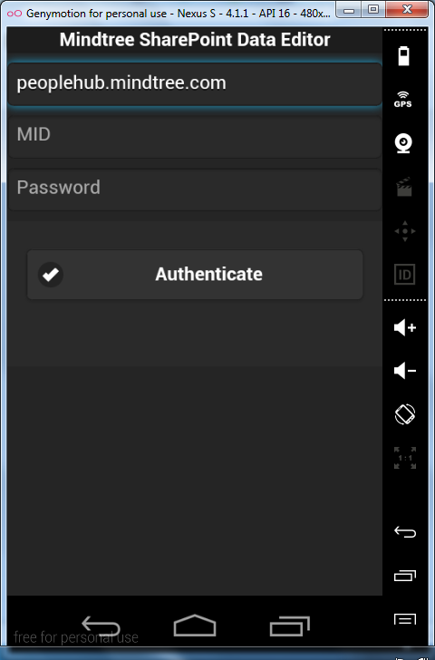
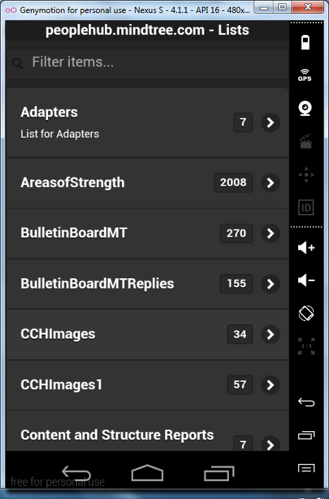
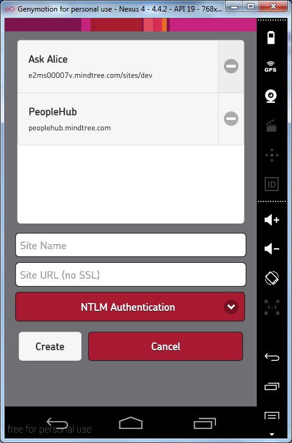
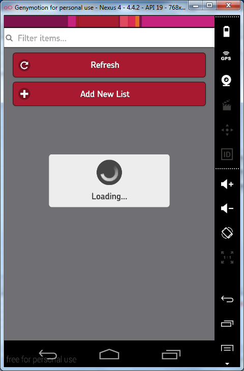

Internship Summary Presentation
Hi, my name is Nick Evans.
I attend the University of Florida.
I have been interning at Mindtree since January.
My main focus has been on:
SharePoint Mobile, a cross-platform mobile application that can interface with Mindtree's SharePoint Servers
Ask Alice, an internal help site similar to Stack Overflow
SharePoint Mobile
Initial Frameworks
I built the initial application using the jQuery and jQuery Mobile frameworks.




We've gone a long way.
NTLM Authentication
I developed a cross-platform solution in JavaScript to authenticate with the SharePoint servers.
function ntlmAuth(username, password, domain, url, type){
Ntlm.setCredentials(domain, username, password);
var ntlmRequest = Ntlm.createAuthenticationChallenge(url, type);
ntlmRequest.setRequestHeader('Accept', 'application/json; odata="verbose"');
ntlmRequest.send(null);
var json = $.parseJSON(ntlmRequest.responseText);
return json;
}
In the meantime, I proposed novel solutions to sidestep the authentication issues.
CRUD Operations
I discovered and implemented create, read, update, and delete operations on SharePoint lists, folders, and list items using REST API calls and SOAP queries.
function getXRD(){
var url = localStorage.getItem("ssl") + localStorage.getItem("host") + "/_api/contextinfo";
var json = ntlmAuth(username, password, domain, url, type);
var xrd = json.d.GetContextWebInfromation.FormDigestValue;
return xrd
}
Documentation
I wrote extensive documentation. You can view it all on the SharePoint Mobile GitLab Repo.
In fact, this entire presentation is written in HTML, JavaScript, and CSS!
Thanks to bespoke.js
Ask Alice
Contributions
All of the teams hard work (especially authentication) was applied to the Ask Alice team's needs.
What I've learned
- Good design demands good compromise.
- jQuery and jQuery mobile are the bomb.
- PhoneGap is a powerful tool, but will never achieve native results.
- SharePoint 2013 is a fickle beast.
- Everything you do will be on a team, learn to work together.
- Outlook is your best friend.
- Newfound respect for software developers. I have a lot to aspire to.